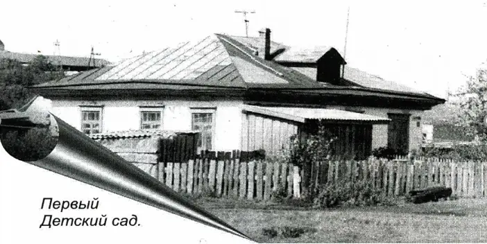
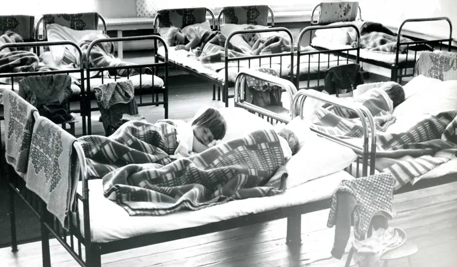
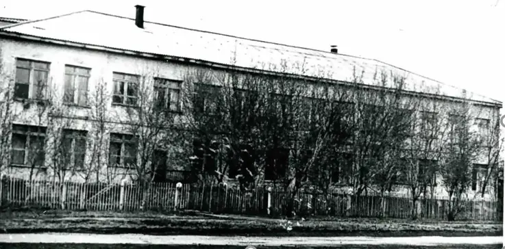
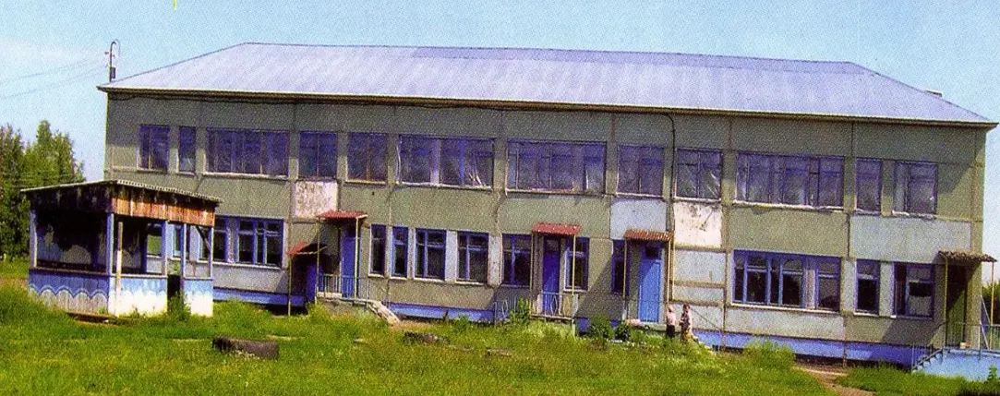
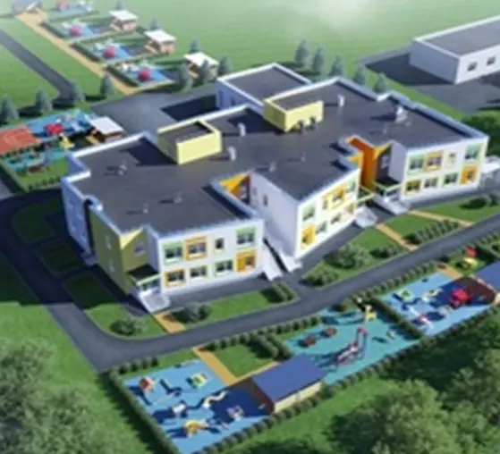

Дом, в котором все окна распахнуты в детство,
Я любуюсь тобой, не могу наглядеться.
Мне милее и краше всех зданий на свете
Дом, в котором с утра собираются дети.
А.С. Макаренко писал, что создать коллектив воспитателей может только единая цель в работе; что этот коллектив не может быть собран случайно, а должен быть составлен разумно; что хорошо, когда в коллективе есть люди с опытом и рядом молодые воспитатели, хорошо, когда есть весельчаки, остроумцы; что чрезвычайно важно создавать в коллективе традиции. При разумном сочетании в коллективе разных возрастов успешно реализуется принцип преемственности, укрепляются и обновляются хорошие традиции и внедряются новые.
Первый детский сад был в здании колхозной конторы имени Калинина. Садик был сезонным, т.е. на лето он открывался. Заведующей детским садом была Лазарева Антонина Ивановна, дети, которые посещали детский сад, были послевоенных годов 1949г. – 1955г.
В 1956 году построили специальное здание детского сада, оно и сейчас еще стоит. Первой заведующей была Черниченко Ольга Елисеева. В этом саду была одна смешанная группа, не было ни воспитателей, ни медицинского работника. Так садик проработал до 1964 года.
В 1964 году, когда организовался совхоз «Береговой», детский сад переехал в здание колхозной конторы (дом Чабана Н.И. – председателя колхоза). Заведующей детским садом была Зрячева Екатерина. Здесь уже были группы, был штат сотрудников: няни, воспитатели, повар, завхоз. Продукты возили на коне, молоко через день.
С 1969 года детский сад размещался в доме № 1, средний подъезд. Заведующей детским садом работала Чегодаева Людмила Максимовна. Здесь уже было много детей и групп, ясельная и садовская. На первом этаже справа находилась смешанная 1 и 2 младшая группа. Слева была кухня, и склад под продукты. В центральной квартире находилась прачечная, и медицинский кабинет. На втором этаже находилась средняя, старшая, подготовительная группа. Обедали в 2х комнатах (зал, спальня). Спали в комнатах слева, на железных кроватях, раскладушках.
 В группе стояло два шкафа под игрушки. Из методической литературы было книг штук 5-7. Программа 1 для воспитателей. Под посуду один шкаф. Пол в подъезде на площадке мыли по очереди, в группах было много детей, до 30 человек. Площадка для прогулок была огорожена и находилась около заваленных погребов, как идти на центральную улицу (там находились огороды, сады жителей 2х этажных домов). Штатные работники были все: воспитатели, няни, повар, медработник, прачка, завхоз и другие. В 1972 году сдается в эксплуатацию новый стационарный детский сад на 140 мест. Было три группы ясельная, младшая и старшая группа. Заведующая детским садом - Варфоломеева Евдокия Ивановна.
В первые годы группы были смешанные, а со временем распределены по возрастам, появились воспитатели с педагогическим образованием, заполнялись все группы, спальни стали оборудовать под группы и спать на раскладушках. Оборудования и мебели в детском саду было очень мало.
С 1973 года открыли еще две группы, в то время было две ночные группы: ясельная и садовская. Всех детей распределили на пять групп, по возрастам, затем открыли шестую группу, и детский сад стал полностью укомплектован детьми на 140 человек, иногда было и больше детей до 160. Дети спали на раскладушках, расставляли их прямо в групповой комнате, после сна убирали. Мечтали о новом помещении детского сада, чтобы были спальни.
Няни работали в три смены, т.к. были ночные группы детей. Первая смена с 7:00 до 14:00, вторая смена с 14:00 до 21:00, третья смена с 21:00 до 7:00. Работали по неделе: неделю с утра, неделю с обеда, неделю в ночь.
Педагогический коллектив был укомплектован полностью, все имели специальное образование. Здесь штат работников уже большой до 28 человек и детей 150 человек. Детский сад размещался в этом здании до 1997 года.
С 1997 года детский сад разместился в новом здании, который был оборудован специальными игровыми комнатами и отдельными спальнями, где стояли деревянные кроватки. Садик рассчитан на 115 мест. Имелось отдельное помещение для кухни с полным набором оборудования, отдельная комната для прачки, завхоза, медицинской сестре, музыкальный зал. Каждая группа была оборудована в соответствии с возрастом детей. Садик рассчитан на шесть групп.
Заведующая - Харыбина Ольга Николаевна. Штат работников увеличился, до 40 человек. Все сотрудники имели специальное образование, согласно занимаемой должности. До 2007 года в садике было пять возрастных групп. В 2007 году 28 декабря открылась шестая группа.
С июля 2012 года заведующая детского сада Халтурина Елена Феликсовна. В детский сад принимаются дети с 1 года. Детский сад общеразвивающего вида с приоритетным осуществлением деятельности по физическому развитию. Функционирует 6 групп (ясельная, первая младшая, вторая младшая, средняя, старшая, подготовительная). Проводятся оздоровительно – профилактические мероприятия. Педагоги и их воспитанники принимают активное участие во Всероссийских, региональных, областных, муниципальных конкурсах. Детский сад гордится педагогами, которые работают с открытия первого детского сада в поселении: Поликова Зоя Николаевна, Вшивцева Надежда Иосифовна, Жилкова Людмила Ивановна, Зорина Роза Эльмаровна.
В 2019 году был заложен проект на строительство нового здания детского сада и 29.12.2021 года двери нового здания распахнули свои двери. Дошкольное учреждение с бассейном, рассчитанное на 140 мест, 40 из которых — ясельные. Объект возведен в рамках нацпроекта «Демография».
Двухэтажное здание оформлено в морской тематике. На первом этаже расположены медицинский блок, пункт видеонаблюдения, прачечная, две группы для детей младшего возраста, каждая из которых имеет свой отдельный вход и индивидуальный дизайн. На втором этаже — спальные и игровые помещения для детей постарше, музыкальный и спортивный залы, виртуальный скалодром.
В случае чрезвычайной ситуации проектом предусмотрены запасные выходы. Установлена автоматическая пожарная сигнализация, эвакуационное освещение. Отдельного внимания заслуживает бассейн: с комплексом душевых и раздевалок для мальчиков и девочек каждой группы, тепловым оборудованием для поддержания необходимого температурного режима.
На протяжении четырех лет детский сад работает по ранней профориентации дошкольников «Где родился, там и пригодился, где дети знакомятся с профессиями села и трудом взрослых на селе. В группах организованы центры «Овощеводство» и «Растениеводство», «Животноводство» и «Фермерское хозяйство», «Профессии», «Механизации» и «Мелиорации».
В декабре 2021 году заключен договор с Ассоциацией участников по развитию образовательных нейротехнологий «Нейрообразование» г.Санкт-Петербург. Это сотрудничество в области формирования навыков цифровой культуры и внедрение цифровой технологии в рамках реализации Международного Проекта «Нейрончик» с использованием методических материалов технической и консультативной поддержки Ассоциации.
С 2024 года во главе дошкольного образовательного учреждения, которое славится своим теплом и уютной атмосферой, стоит опытный руководитель – Гуринович Светлана Владимировна. Сегодня коллектив детского сада — это коллектив единомышленников, который трудится по принципу «Мы не останавливаемся на достигнутом, стремимся к новым вершинам!».
Именно благодаря совместным усилиям всего коллектива все эти годы решались и решаются задачи развития детей дошкольного возраста, достигались и достигаются результаты и намеченные цели, рождались и рождаются лучшие традиции, которыми коллектив следует и сегодня.